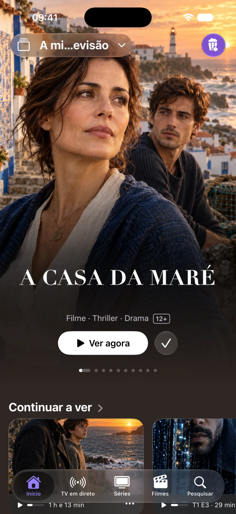
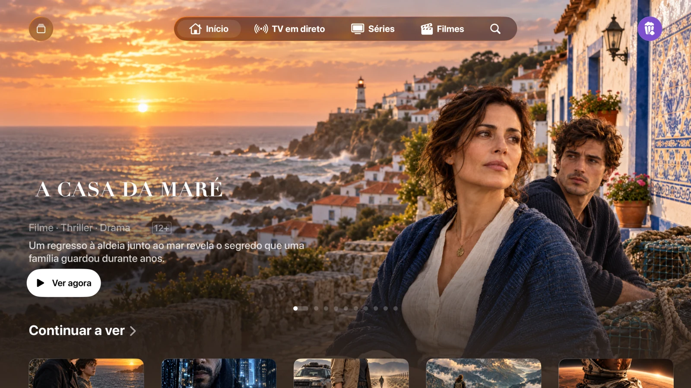
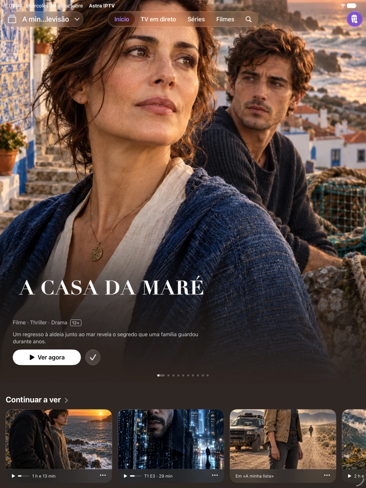

As suas listas, ligadas
Adicione um URL M3U/M3U8 ou uma ligação Xtream. Alterne entre listas e mantenha cada catálogo, favoritos e histórico separados. Também pode importar ficheiros M3U no iPhone e iPad.
Feito para os seus ecrãs
As suas listas, num leitor gratuito sem anúncios da Astra. Ligue M3U ou Xtream e desfrute dos seus canais, filmes e séries no iPhone, iPad e Apple TV.
Traga a sua própria lista. Astra ainda não está disponível na App Store. Decide se envia o e-mail a solicitar o aviso.

Tudo no seu devido lugar
Uma biblioteca que cria espaço para o seu conteúdo. As suas listas, favoritos e progresso de visualização, com controlos que se adaptam a qualquer ecrã.
Adicione um URL M3U/M3U8 ou uma ligação Xtream. Alterne entre listas e mantenha cada catálogo, favoritos e histórico separados. Também pode importar ficheiros M3U no iPhone e iPad.
Navegue pelos canais, veja a programação e consulte o guia de programação XMLTV. Mantenha os seus canais favoritos por perto.
Explore filmes e séries, escolha um episódio e continue a partir do ponto onde parou. O áudio e as legendas estão disponíveis quando a sua fonte os fornece.
Uma aplicação. As suas telas.
Separadores no iPhone, uma barra lateral no iPad e comandos integrados no comando da Apple TV. As listas, os favoritos e o progresso compatíveis podem ser sincronizados através da sua conta iCloud privada.


O AirPlay e o Picture in Picture utilizam o leitor nativo quando o sistema e o formato os suportam. Os ficheiros importados localmente não são transferidos como ficheiros reproduzíveis para a Apple TV.
O lançamento público para iPhone, iPad e Apple TV está a ser preparado. O Astra ainda não está disponível na App Store. Pode solicitar uma notificação de lançamento por e-mail.
Não. A Astra não vende nem disponibiliza canais, filmes, séries, listas de reprodução ou subscrições de TV. Traga uma fonte que tenha permissão para usar.
A sua biblioteca permanece no seu dispositivo. Os dados compatíveis podem ser sincronizados através da sua base de dados privada do iCloud. As estatísticas de utilização e os relatórios de avarias são opcionais, inicialmente desativados e controlados separadamente em Definições.
Este site não tem análises, publicidade, formulários ou cookies próprios. O GitHub Pages aloja-o e pode registar informações técnicas de visita de acordo com a sua política de privacidade.
Desenvolvido por Juan Cazalla Estrella.